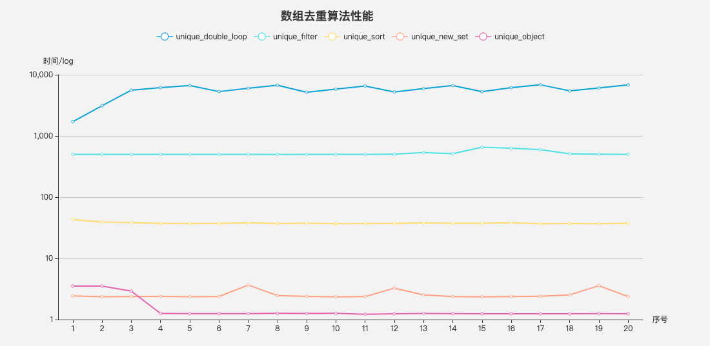

functionunique_sort(arr) { arr = arr.sort() let len = arr.length, result = [arr[0]] for (let i = 1; i < len; i++) { if (arr[i] !== arr[i - 1]) { result.push(arr[i]) } } return result }
functionunique_object(arr) { let obj = {}, result = [] let len = arr.length for (let i = 0; i < len; i++) { if (!obj[arr[i]]) { result.push(arr[i]) obj[arr[i]] = true } } return result }
// 测试方法 functionruntime(func, times) { let time = []
for (let i = 0; i < times; i++) { let _testArr = testArr.slice() let start = process.hrtime.bigint() func.call(this, _testArr) let end = process.hrtime.bigint() time.push(Number(end - start) / 1000000) }
return time }
结果如下

可以看到，结果基本符合上文中的时间复杂度的顺序，双重循环性能最差，Set 和 哈希表方法最优，其中哈希表性能优于 Set 方法
多种数据类型去重
在 JavaScript 中对象是引用类型，无法用 === 直接判断是否相等；而 NaN 等数据类型同样不能判断